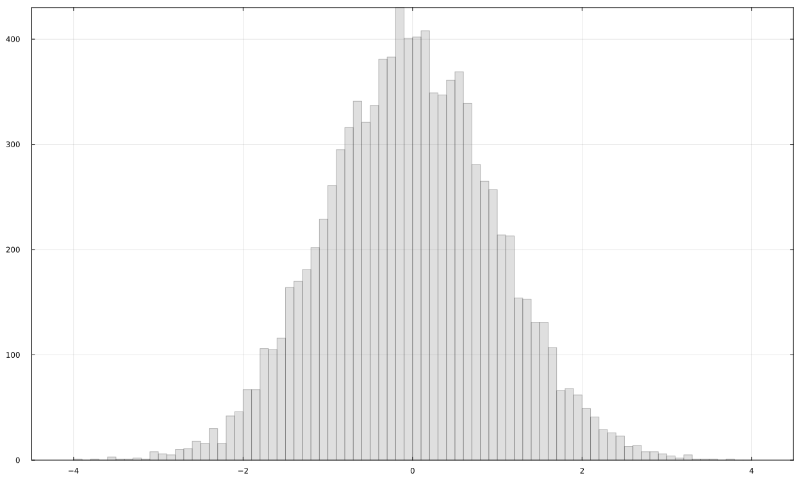
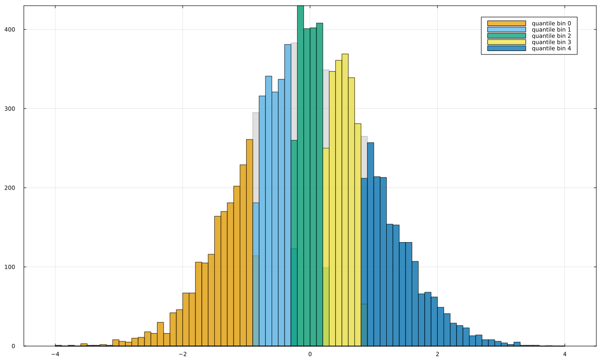
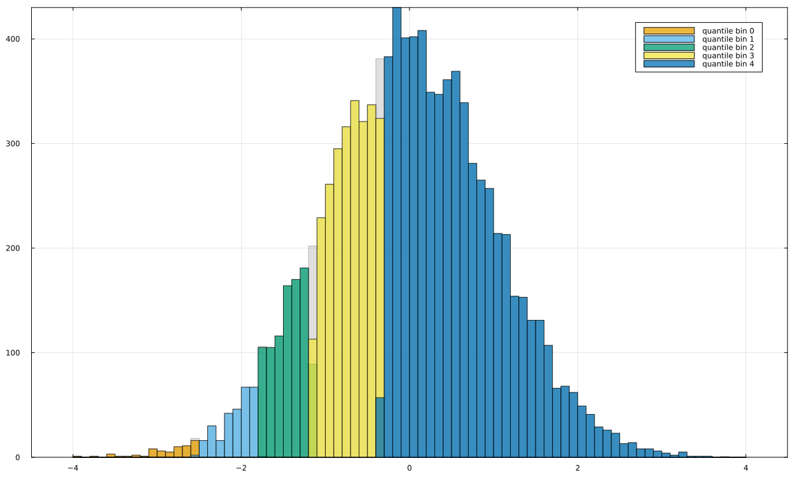
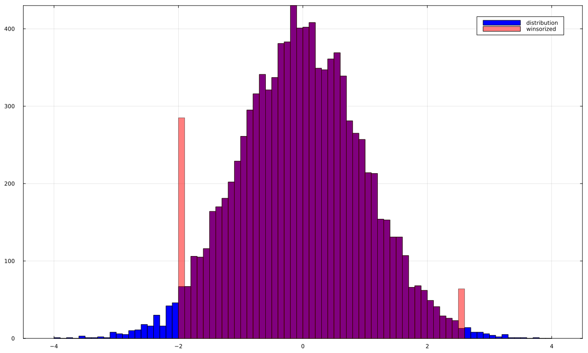
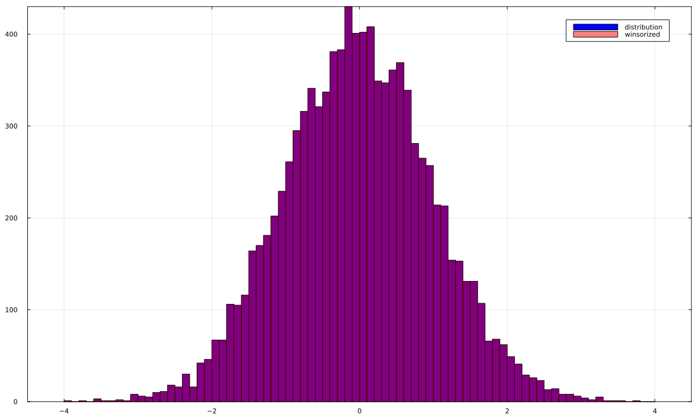
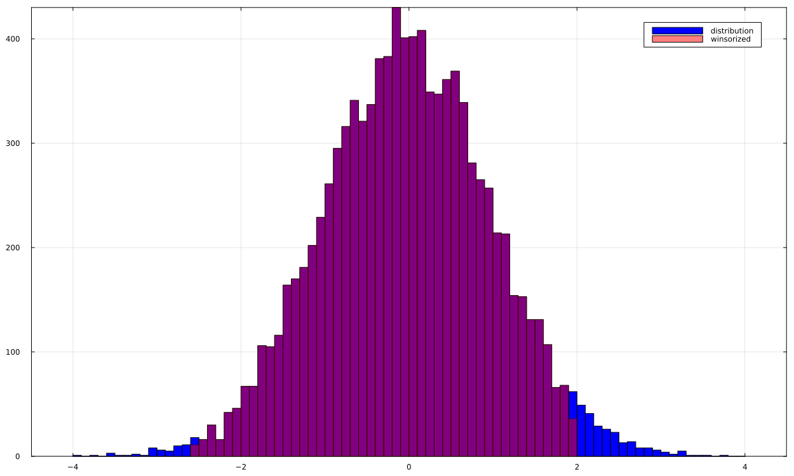
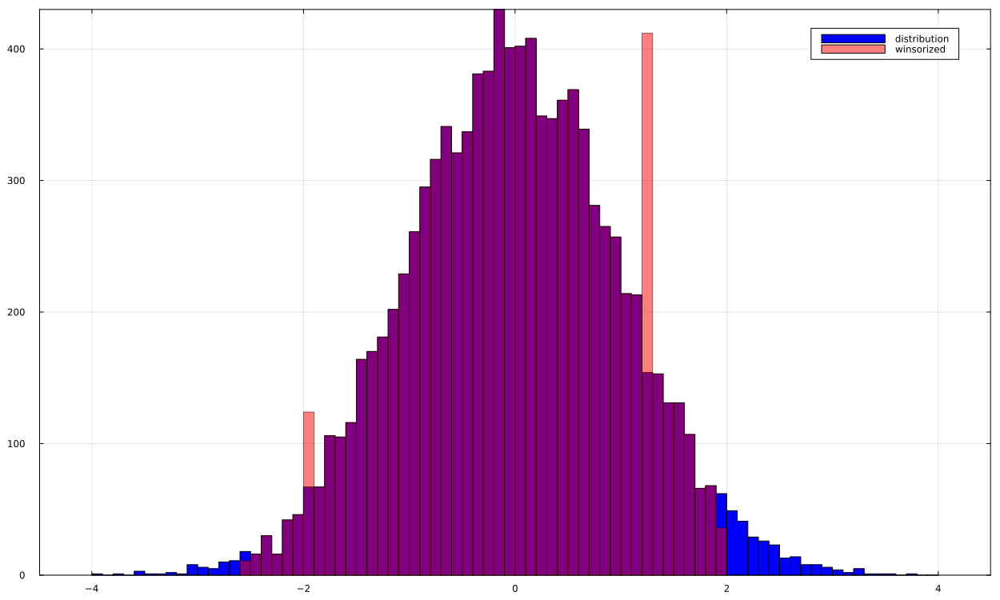
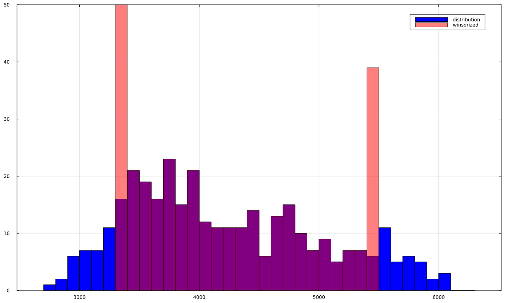
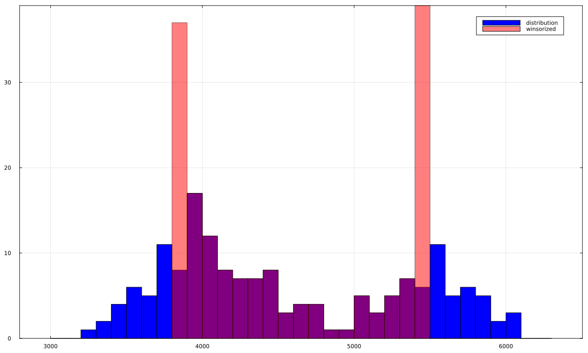

Winsorizing
The function winsorize tries to emulate stata winsor function.
There is a winsor function in StatsBase.jl but I think it's a little less full-featured.
Basic usage
Start with a simple distribution to visualize the effect of winsorizing
Random.seed!(3); x = randn(10_000);
p1 = histogram(x, bins=-4:0.1:4, color="blue", label="distribution",
framestyle=:box, size=(1250,750))
Replace the outliers based on quantile
x_win = winsorize(x, probs=(0.05, 0.95));
p2 = histogram(x, bins=-4:0.1:4, color="blue", label="distribution", framestyle=:box);
histogram!(x_win, bins=-4:0.1:4, color="red", opacity=0.5, label="winsorized")
One side trim
x_win = winsorize(x, probs=(0, 0.8));
p3 = histogram(x, bins=-4:0.1:4, color="blue", label="distribution", framestyle=:box);
histogram!(x_win, bins=-4:0.1:4, color="red", opacity=0.5, label="winsorized");
Bring your own cutpoints
Another type of winsorizing is to specify your own cutpoints (they do not have to be symmetric):
x_win = winsorize(x, cutpoints=(-1.96, 2.575));
p4 = histogram(x, bins=-4:0.1:4, color="blue", label="distribution", framestyle=:box);
histogram!(x_win, bins=-4:0.1:4, color="red", opacity=0.5, label="winsorized");
Rely on the computer to select the right cutpoints
If you do not specify either they will specified automatically
x_win = winsorize(x; verbose=true);
p5 = histogram(x, bins=-4:0.1:4, color="blue", label="distribution", framestyle=:box);
histogram!(x_win, bins=-4:0.1:4, color="red", opacity=0.5, label="winsorized");[ Info: Inferred cutpoints are ... (-4.073837032137298, 4.019734075131403) (using interquartile range x 3 from median)
How not to replace outliers
If you do not want to replace the value by the cutoffs, specify replace_value=missing:
x_win = winsorize(x, cutpoints=(-2.575, 1.96), replace_value=missing);
p6 = histogram(x, bins=-4:0.1:4, color="blue", label="distribution", framestyle=:box);
histogram!(x_win, bins=-4:0.1:4, color="red", opacity=0.5, label="winsorized");
How to choose your replacement
The replace_value command gives you some flexibility to do whatever you want in your outlier data transformation
x_win = winsorize(x, cutpoints=(-2.575, 1.96), replace_value=(-1.96, 1.28));
p7 = histogram(x, bins=-4:0.1:4, color="blue", label="distribution", framestyle=:box);
histogram!(x_win, bins=-4:0.1:4, color="red", opacity=0.5, label="winsorized");
Within a DataFrame
I try to mimick the gtools winsor example
Winsorize one variable
df = DataFrame(PalmerPenguins.load())
# gstats winsor wage
transform!(df, :body_mass_g => (x -> winsorize(x, probs=(0.1, 0.9)) ) => :body_mass_g_w)
p8 = histogram(df.body_mass_g, bins=2700:100:6300, color="blue", label="distribution", framestyle=:box);
histogram!(df.body_mass_g_w, bins=2700:100:6300, color="red", opacity=0.5, label="winsorized");
Winsorize multiple variables
# gstats winsor wage age hours, cuts(0.5 99.5) replace
var_to_winsorize = ["bill_length_mm", "bill_depth_mm", "flipper_length_mm"]
transform!(df,
var_to_winsorize .=> (x -> winsorize(x, probs=(0.1, 0.9)) ) .=> var_to_winsorize .* "_w")
show(IOContext(stdout, :limit => true, :displaysize => (20, 100)), df, allcols=true, allrows=false)344×11 DataFrame
Row │ species island bill_length_mm bill_depth_mm flipper_length_mm body_mass_g sex body_mass_g_w bill_length_mm_w bill_depth_mm_w flipper_length_mm_w
│ String15 String15 Float64? Float64? Int64? Int64? String7? Union…? Float64? Float64? Union…?
─────┼──────────────────────────────────────────────────────────────────────────────────────────────────────────────────────────────────────────────────────────────────────
1 │ Adelie Torgersen 39.1 18.7 181 3750 male 3750 39.1 18.7 185.0
2 │ Adelie Torgersen 39.5 17.4 186 3800 female 3800 39.5 17.4 186
3 │ Adelie Torgersen 40.3 18.0 195 3250 female 3300.0 40.3 18.0 195
4 │ Adelie Torgersen missing missing missing missing missing missing missing missing missing
5 │ Adelie Torgersen 36.7 19.3 193 3450 female 3450 36.7 19.3 193
6 │ Adelie Torgersen 39.3 20.6 190 3650 male 3650 39.3 19.5 190
⋮ │ ⋮ ⋮ ⋮ ⋮ ⋮ ⋮ ⋮ ⋮ ⋮ ⋮ ⋮
340 │ Chinstrap Dream 55.8 19.8 207 4000 male 4000 50.8 19.5 207
341 │ Chinstrap Dream 43.5 18.1 202 3400 female 3400 43.5 18.1 202
342 │ Chinstrap Dream 49.6 18.2 193 3775 male 3775 49.6 18.2 193
343 │ Chinstrap Dream 50.8 19.0 210 4100 male 4100 50.8 19.0 210
344 │ Chinstrap Dream 50.2 18.7 198 3775 female 3775 50.2 18.7 198
333 rows omittedWinsorize on one side only
# left-winsorizing only, at 1th percentile;
# cap noi gstats winsor wage, cuts(1 100); gstats winsor wage, cuts(1 100) s(_w2)
transform!(df, :body_mass_g => (x -> winsorize(x, probs=(0.1, 1)) ) => :body_mass_g_w )
show(IOContext(stdout, :limit => true, :displaysize => (20, 100)), df, allcols=true, allrows=false)344×11 DataFrame
Row │ species island bill_length_mm bill_depth_mm flipper_length_mm body_mass_g sex body_mass_g_w bill_length_mm_w bill_depth_mm_w flipper_length_mm_w
│ String15 String15 Float64? Float64? Int64? Int64? String7? Union…? Float64? Float64? Union…?
─────┼──────────────────────────────────────────────────────────────────────────────────────────────────────────────────────────────────────────────────────────────────────
1 │ Adelie Torgersen 39.1 18.7 181 3750 male 3750 39.1 18.7 185.0
2 │ Adelie Torgersen 39.5 17.4 186 3800 female 3800 39.5 17.4 186
3 │ Adelie Torgersen 40.3 18.0 195 3250 female 3300.0 40.3 18.0 195
4 │ Adelie Torgersen missing missing missing missing missing missing missing missing missing
5 │ Adelie Torgersen 36.7 19.3 193 3450 female 3450 36.7 19.3 193
6 │ Adelie Torgersen 39.3 20.6 190 3650 male 3650 39.3 19.5 190
⋮ │ ⋮ ⋮ ⋮ ⋮ ⋮ ⋮ ⋮ ⋮ ⋮ ⋮ ⋮
340 │ Chinstrap Dream 55.8 19.8 207 4000 male 4000 50.8 19.5 207
341 │ Chinstrap Dream 43.5 18.1 202 3400 female 3400 43.5 18.1 202
342 │ Chinstrap Dream 49.6 18.2 193 3775 male 3775 49.6 18.2 193
343 │ Chinstrap Dream 50.8 19.0 210 4100 male 4100 50.8 19.0 210
344 │ Chinstrap Dream 50.2 18.7 198 3775 female 3775 50.2 18.7 198
333 rows omittedWinsorize by groups
transform!(
groupby(df, :sex),
:body_mass_g => (x -> winsorize(x, probs=(0.2, 0.8)) ) => :body_mass_g_w)
p9 = histogram(df[ isequal.(df.sex, "male"), :body_mass_g], bins=3000:100:6300,
color="blue", label="distribution", framestyle=:box);
histogram!(df[ isequal.(df.sex, "male"), :body_mass_g_w], bins=3000:100:6300,
color="red", opacity=0.5, label="winsorized");